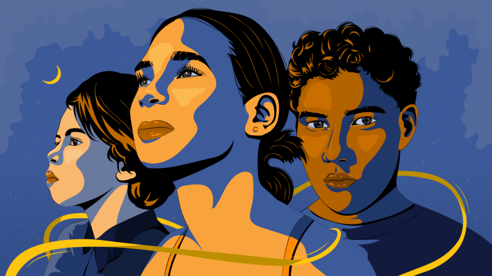
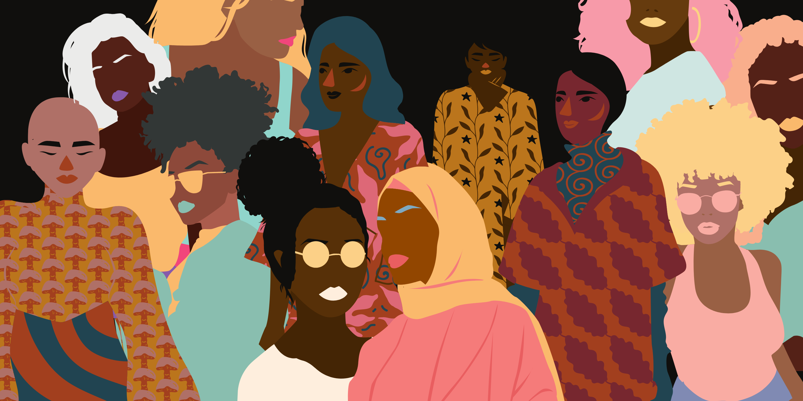
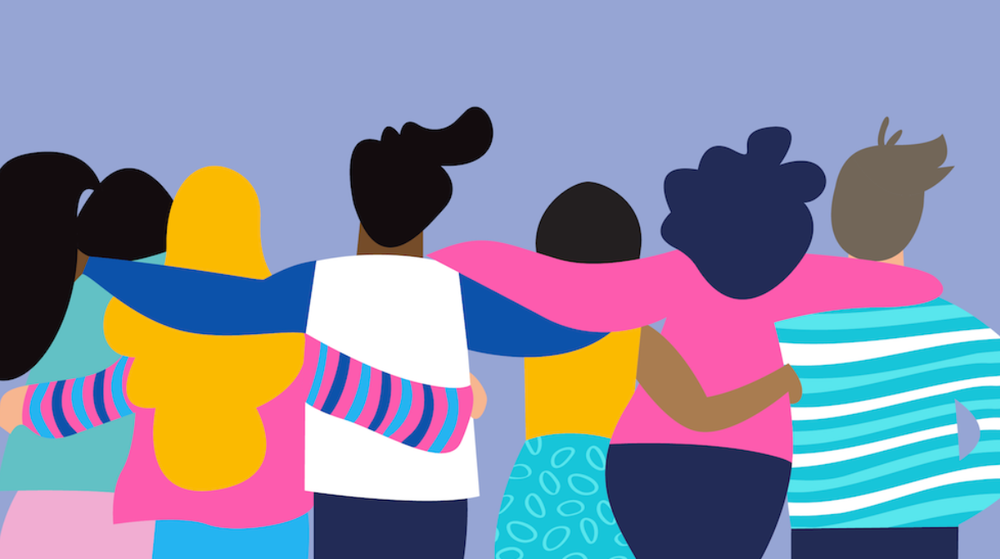

Introduction
Racism is present everywhere. One form of racism can be found in media and pornography. The race category in porn sites often portrays gender stereotypes and highlights the race of the entertainers rather than creating the persona of the actors that are not affiliated with their race. This is also present in media, especially in tv shows and movies wherein the ethnic character's role is often centered around their racial stereotypes. The race genre in porn typically depicts race play or also known as ethnic pornography. The performers in this type of video often came from an ethnic group- Asian, Middle Eastern, Latinx, Native American, Black- and they would have interracial intercourse. Most of the supporters of romantic racism came from dominating race who extends their sexual fantasies to the oppressed race. Although pornography provides entertainment for some and becomes a way to explore their sexuality, racial tropes becomes a tool to eroticize and fetishize people of color based on their racial stereotypes and it should be abolished.
Readings


Asian
Readings:
The Resurrection of Brandon Lee: The Making of a Gay Asian American Porn Star
Learn More
Black
Readings:
Beyond Black and Blue: BDSM, Internet Pornography, and Black Female Sexuality
Learn More
Latinx in Pornography
Who are the Latinx?
A latinx is any person of Latin America descent or origin. The word latinx is formed to avoid masculine or feminine connotations. This is a gender-non-conforming terminology that promotes inclusion.

There is a recurring trend for Latinx in pornography. They are always portrayed by the entertainers as hot and spicy girls that are aggressive with high sexual drive. The common roles for latinas are maids or secretaries that will follow whatever their boss tells them or someone that is easily seduced by a rich white male. These pornographic content uses the common stereotypes for latinxaand reinforce them in this videos.
Moreover, latinx speech often plays a significant role in these videos. Their accents are often emphasized. The characters often have a heavy Spanish accent, when in fact, Spanish is not the only language in Latin countries. In addition, they tend to make their speaking volume loud and their word choice vulgar to reinforce the feisty latinx character.
In the essay “The pornographic Grammar of the Vocal Latinx Body, Hernandez explored and looked for Latin representation in pornography. She was able to tell the story of Frances, a Latina actress. The girl explained that Latina actresses are “encouraged to hyper perform their vocal body, particularly their thick accent and intonation” (Hernandez, 591). This proves that the movie and porn industry cannot truly let latinx be someone that is more than their race. To add more, Frances’ role in the video they were shooting is a low class Latina with broken English and was tasked to speak dirty talk in Spanish. She is being racialized and sexualized through her foreignness. The character was also describes as having dirty house, which profiles the character as unsanitary while the other white actor was described a being extremely sanitary. This just shows how the character is portrayed as low class, chaotic, and dirty. On the other hand, the white actor is seen as clean with higher status.
These types of content are extremely dangerous especially for young latinx, even more now than ever, since pornography are easily accessible due to the rise of technology. It brings the ideology to latinx that they have to act this way because of their racial stereotypes.
Asian in Pornography
Who are the Asians?
Asians are described as people that descended from Far East, Southeast Asia or the Indian subcontinent. Although Asia is a continent with varied backgrounds and diverse ethnicities, the common ethnicities that are referred to as “Asians” are Chinese, Indian, Filipino, Vietnamese, Korean and Japanese.
Asians are often described as submissive, passive and innocent. Many asian roles in shows or porn portray asian as child-like and would follow whatever they were told to do. There is a popular term often used to describe Asian fetishsizations, Yellow Fever. This is a derogatory term to describe the fetish of white male to East or Southeast Asians. The word came from how they see Asian skin tone, yellow.
Asian men in films are often feminized; they are seen as either weak or nerds or if they are depicted as strong and powerful, their roles are often their stereotypes as kung fu masters like Jackie Chan’s typical roles (Nguyen, 2004). Many asians are depersonalized and the way they are shown in film are liked based on their Asian looks and culture but not on how they are beyond their race.
In “The Resurrection of Brandon Lee: the Making of a Gay Asian American Porn Star”, Nguyen tells the story of Brandon Lee and explores the racism and how it feels to be an Asian in the porn industry. Lee became a part of the industry after being recruited by the director from seeing his “egg roll”. The term used to call his private part is already a giveaway on how Asian Americans are appropriated and disrespected. Nguyen narrates how Lee’s costars have heavily accented English and they have poor verbal performance, which is used to show the exoticism of the Asian actors. In short, their accents are used to enhance the porn content since Asian accents feed to the fetishizations of the viewers.
In one of Lee’s videos, his Japanese co-star Mito has a broken English and smaller private parts while Lee has a Valley Guy English and has a bigger genitalia. In the film, Mito acts as the bottom while Brandon is the top. From here, it can be seen how race and accent shows power even on stars that are both Asian. Being on top in pornography is a symbol power and it is very interesting that the non-Americanized actor with a smaller dick is a bottoom while the Americanized Asian is a top.
In addition, Lee has another porn video wherein he is with a co-star named Scott. Scott is a white lawyer in the film. Scott repeatedly calls Brandon “boy” in the video and ask him to “f*ck him like a man”. This just shows how Asians are demasculinized and treated like children even though they are the same age and level as the speaker. Lee is being commanded by Scott even though Lee is the top on that scene. Asians are still dominated and are being controlled even in sexual positions where they are supposed to look like they are more dominant to their co-stars.
Black in Pornography
Who are the Black?
Black is a classification for people with brown to black skin color. When a person is considered black, it doesn't necessarily mean that they have black skin color right away, some countries consider people with darker skin complexion compared to the average people in that country as black.

Sexualization of black women especially by white male has a deep tragic history. This can be rooted way back during colonization and slavery wherein many black women were hypersexualized by white men. In today's time, black fetishization is still prevalent. Black women are often described as "ghetto" or very disrespectful and usually men in pornography will see them as someone that they have to dominate over and control. On the other hand, male are sexualized by their muscular body and the common stereotype that they have large private parts. Also, they are portrayed as violent that will force white women to perform sexual activities with them.
In "Beyond Black and Blue: BDSM, Internet Pornography, and Black Female Sexuality, Cruz discusses the dynamic relationship between the dominant and submissive enactment in porn and how it is associated with racism and consent. She explains that "Race play reveals how narratives of racialized sexual violence hinged on historical wrongdoing and racial transgression script performances of Black/ white interracial intimacy in BDSM" (pp 424). Indeed, BDSM and race play is not just about pleasure but the sexual act itself becomes a contest of power and the eroticization of racism.
Racial tropes dehumanizes the casts and spreads racial stereotypes for black people that can be taken back from slavery. Thompson conducted an interview to the first Black male performer at American porn studio Assylum- King Noire. King Noire said that the studio typically cast male performers as doctor or orderlies. However, for his first show, he was casted as a janitor instead. He refused the role but his request was denied. He claims that "majority of the roles that are afforded to BIPOC performers in the adult industry are rooted in racism and colonialism." It is very intriguing that the first black actor in the company was given a low class role when the company usually writes characters with high societal status.
Conclusion
Pornography is a way for many to discover their sexuality and to pleasure themselves. However, the constant stereotype for 'fesity Latina', 'nerdy Asian' and 'disobedient Black' in porn dehumanizes these actors or actresses as they cannot truly be someone else that is not associated with their race. This website does not condone pornography or say that it should be completely abolished. There should be a change in how people of color are characterized in these contents as it continuously feed on the racial fetishization and promotes sexual violence.

Let women of color play roles that are outside of their racial stereotypes! A latina can be a nerd. An asian can be obedient and feisty. A black can be soft and non aggressive.
References
Hernandez, Yessica Garcia. “The Pornographic Grammar of the Vocal Latinx Body.” GLQ: A Journal of Lesbian and Gay Studies 26, no. 3 (June 1, 2020): 590–96. https://doi.org/10.1215/10642684-831192.
Nguyen, Tan Hoang “The Resurrection of Brandon Lee: The Making of a Gay Asian American Porn Star” Porn Studies. Durham: Duke University Press, 2004.
Cruz, Ariane. “Beyond Black and Blue: BDSM, Internet Pornography, and Black Female Sexuality,” 2022, 29..
Thompson, Rachel. “Porn, and Porn Sites, Bolster Racist Tropes by Design.” Mashable, Mashable, 29 Oct. 2021, https://mashable.com/article/porn-racist-tropes.
Bozeman, bySeamus, et al. “The Problem with Race in the Porn Industry.” Affinity Magazine, 26 July 2017, http://affinitymagazine.us/2017/07/25/the-problem-with-race-in-the-porn-industry/.